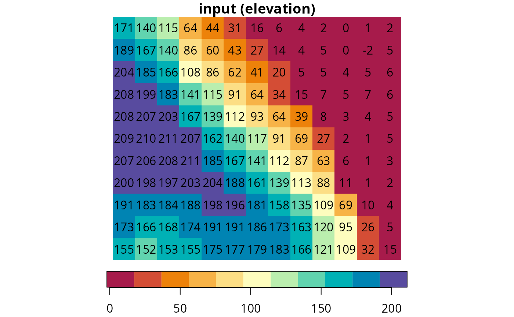
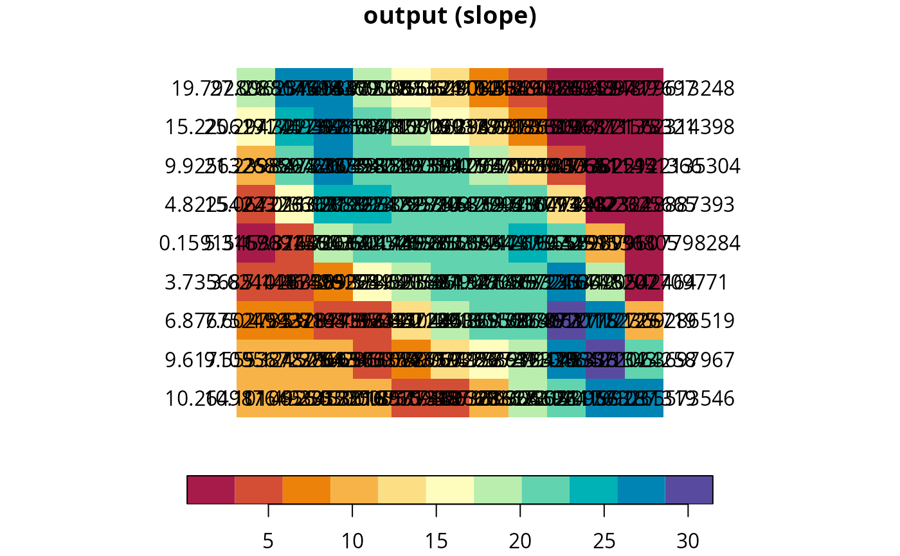
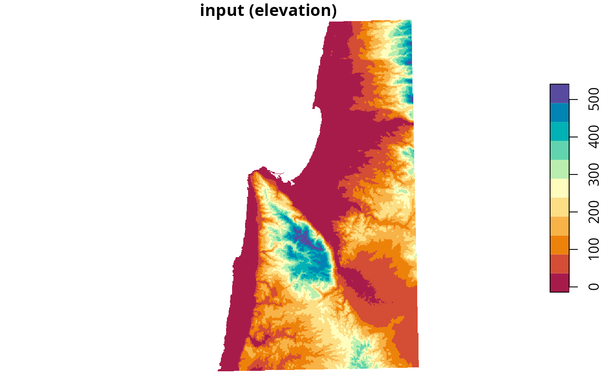
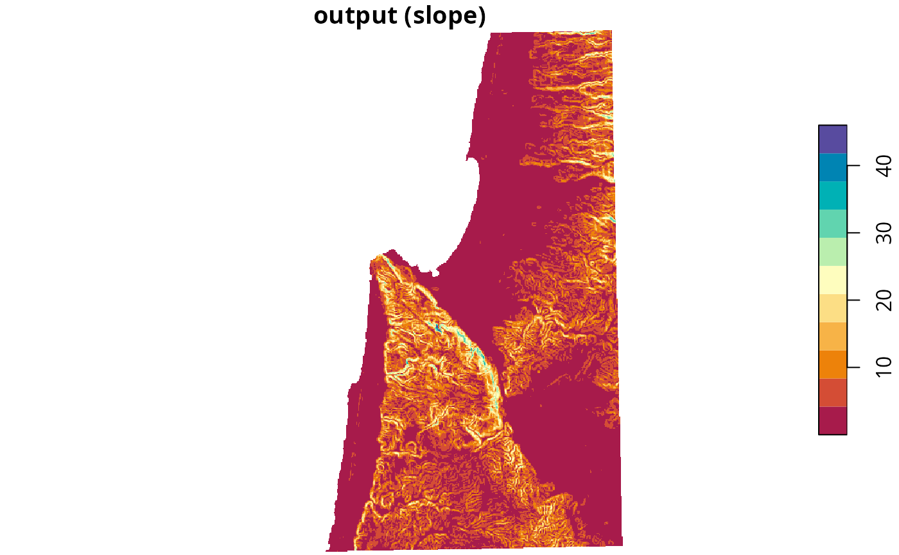

Calculates topographic slope given a Digital Elevation Model (DEM) raster. Input and output are rasters of class stars, single-band (i.e., only `"x"` and `"y"` dimensions), with one attribute.
Value
A stars raster with topographic slope, i.e., the azimuth where the terrain is tilted towards, in decimal degrees (0-360) clockwise from north.
Note
Slope calculation results in NA when at least one of the cell neighbors is NA, including the outermost rows and columns. Given that the focal window size in slope calculation is 3*3, this means that the outermost one row and one column are given an slope value of NA.
The raster must be in projected CRS, and units of x/y resolution are assumed to be the same as units of elevation (typically meters).
References
The topographic slope algorithm is based on the How slope works article in the ArcGIS documentation:
https://desktop.arcgis.com/en/arcmap/10.3/tools/spatial-analyst-toolbox/how-slope-works.htm
Examples
# Small example
data(dem)
dem_slope = slope(dem)
plot(
dem, text_values = TRUE, breaks = "equal",
col = hcl.colors(11, "Spectral"), main = "input (elevation)"
)

# \donttest{
plot(
dem_slope, text_values = TRUE, breaks = "equal",
col = hcl.colors(11, "Spectral"), main = "output (slope)"
)

# Larger example
data(carmel)
carmel_slope = slope(carmel)
plot(
carmel, breaks = "equal",
col = hcl.colors(11, "Spectral"), main = "input (elevation)"
)

plot(
carmel_slope, breaks = "equal",
col = hcl.colors(11, "Spectral"), main = "output (slope)"
)

# }